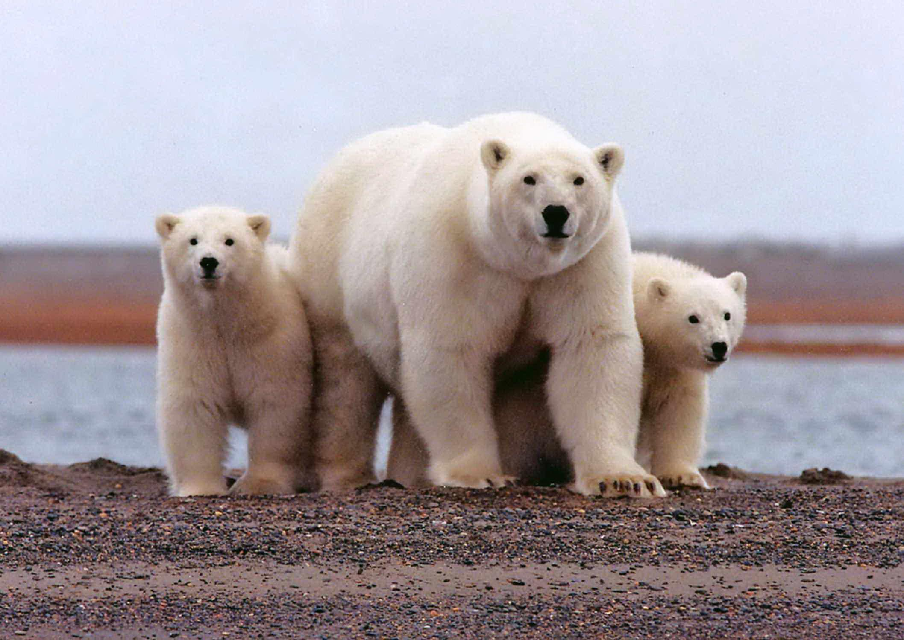

| ESPECIES EN PELIGRO DE EXTINCIÓN | CAUSAS | IMAGEN |
| OSO POLAR | La pérdida de su hábitat, el hielo marino, debido al cambio climático, es la mayor amenaza para la supervivencia de los osos polares. Sin embargo también enfrentan otras amenazas como los conflictos con los humanos, la caza insostenible y los impactos generados por la industria. |  |
| OSO PANDA | Las principales amenazas a las que se enfrenta el oso panda, y que causan que esté en peligro de extinción, son la dificultad para reproducirse cuando están en cautividad, la destrucción de su hábitat y la caza ilegal. | |
| GORILA DE MONTAÑA | La población de gorilas de los Montes Virunga llegó a estar en peligro crítico de extinción por la caza furtiva, la deforestación, las enfermedades transmitidas por los seres humanos y las guerras civiles en la región. | |
| CHIMPANCE COMÚN | La desaparición de los bosques por la minería, ganadería, tala y otras formas de explotación de los recursos naturales están contribuyendo a disminuir las poblaciones en el África tropical. | |
| LINCE IBÉRICO | El principal motivo por el que los linces ibéricos se encuentran en tal peligro de extinción es la caza masiva de la especie durante el siglo XX. En la actualidad, las principales amenazas a las que se enfrenta este felino son la falta de alimento, la enfermedad y los atropellos. |